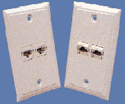
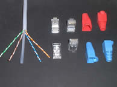

Gigabit 網路佈線系統 (Copper Solutions)
宏翔科技提供完整符合 Cat 6 標準的 GigaSpeed 解決方案，確保您的網路基礎設施具備充足的頻寬與卓越的訊號穩定性。
GigaSpeed Cat 6 資訊資訊插座 (Information Outlets)

MPS100E 模組
Cat 6 資訊插座
專為高密度安裝設計，具備優異的近端串音 (NEXT) 抑制性能。

面板與插座組合
標準 86 型面板
可搭配單孔至四孔面板，美觀且符合標準安裝規範。

Cat.6 UTP RJ45 護套
防勾設計保護
高彈性材質有效分擔壓接處受力，防止施工時卡榫斷裂或過度彎曲造成損耗。
技術優勢 (Technical Advantages)
- 超高頻寬： 完全符合並超越 TIA/EIA 568-B.2-1 Cat 6 標準。
- 簡易端接： 採用標準 IDC 壓接方式，不須特殊工具即可快速施工。
- 性能穩定： 專利的導線排列技術，有效降低訊號衰減與干擾。
- 向下相容： 完美相容 Cat 5e 及舊有佈線標準。
需要查看網路配線盤 (Patch Panel) 的詳細規格？
查看配線盤系列 (Panels) →